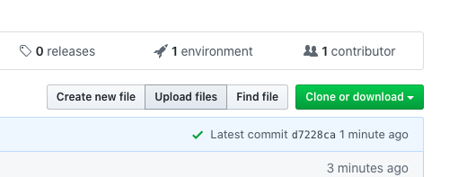

Publish Your Map on the Web¶
Here are two (free!) options for publishing your Folium map on the web.
Netlify¶
One of the easiest ways to publish your map is to drag and drop your map into Netlify.

All you need to do is:
Create a folder for your web map (which you can name whatever you want, e.g. “my-web-map”)
Change the name of your map HTML file to “index.html”
Move “index.html” inside your web map folder
Then drag and drop this folder into Netlify

Netlify will create a live site with your map (at a random URL), which will stay online for 24 hours. To make this site permanent and/or change the site URL, you can sign up for a free Netlify account. To change the site’s name, go to Settings -> Site Details -> “Change site name”

You can check out a sample map published with Netlify here: https://ithaca-map.netlify.app/
GitHub Pages¶
You can also publish your map as a simple website with GitHub Pages (as featured in the example above). Below I’m going to walk through the key points of the GitHub Pages tutorial for creating a “Project site.”

Though you don’t need to be a GitHub expert to make a GitHub Pages website, understanding the following premises will be helpful:
GitHub consists of “repositories” where you can store files and code for your projects
Git (the backbone of GitHub) is a version-control system that helps you keep track of the changes in your projects. Whereas a platform like Google Docs automatically keeps track of changes that you make in a document, Git needs you to record and track your own changes in a more explicit way. You will need to “commit” any changes that you make (e.g., adding your map file) and include a message that describes this change (e.g., “added a map file”).
For more information, refer back to our course materials Git & GitHub or see GitHub’s official guides.
Create a New Repository¶
If you don’t have one already, create a GitHub account. Then create a “New repository”.
Note
Your free GitHub Pages website will be hosted at a URL that combines your GitHub user name and your repository name, like so https://user-name.github.io/repo-name/ So be sure to choose your names wisely!
Provide a name for your repository and then click “Create Repository.”

Choose a GitHub Pages Theme¶
Choose a theme/style/layout for your website. Go to Settings -> GitHub Pages -> “Choose a theme”. For this tutorial, I’m choosing the “Minimal” theme.

Once you’ve selected a theme, you can delete the text that’s included in the default “index.md” file. Whatever you put in this Markdown (.md) file will be featured on your web site’s home page. For now, you can put something simple in the file, add a “commit” message (such as “added website content”), and then “Commit changes” (you can “Commit directly to the master branch”).

Note
Markdown is a special markup language, which allows you to format and style text in a very simple way. For example, a hash mark # will format your text as a header and a pair of asterisks ** will format your text in italics.
Upload Map and Logo¶
To upload your map HTML file and (optionally) an image for a web site logo to your GitHub repository, click “Upload files.”
Then drag and drop your map HTML file and a logo image, type a commit message, and “Commit changes”.

Embed and Link to Map¶
Embed¶
To embed your map directly into your home page, return to your “index.md” file, click the “Edit” button (the little pencil icon), and add the following “iframe” code with your map html file inside:
<iframe src="Ithaca-map.html" height="500" width="500"></iframe>
NOTE: HTML (like the iframe code above) is conveniently compatible with Markdown.
Link¶
To link to your map from your home page, add your HTML file inside a Markdown-formatted link, as below:
You can explore this map [as its own web page here](Ithaca-map.html)
👇👇👇
You can explore this map as its own web page here
Customize Map¶
This GitHub Pages site is meant to be minimal (hence the name), but there are a few ways that you can customize it.
You can change the title of your website, provide a description, and add a logo by editing the “_config.yml” file, as below:
title: Sample Map Website
description: This website demonstrates how to easily publish and display an interactive map made with Folium. It features some hot spots around Ithaca, NY.
logo: Taughannock.jpg
**#**Note: You can also add a logo from an image URL, as below
**#**logo: https://www.lawschool.cornell.edu/_cs_apps/pt_photo_gallery/uploads/mainphotogallery/fullsizeimage/Photogallery_Ithacapage_8.png```
You can read more about configuration options at the Minimal theme’s GitHub page.
Sample Website¶
You can look at the GitHub repository for this sample website here: https://github.com/melaniewalsh/Sample-Map-Website